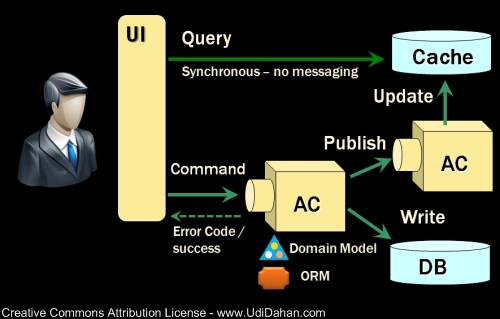

Может ли CQRS-команда возвращать результат?¶
Автор раздела: Ivan Zakrevsky
Статья посвящена довольно дискуссионному вопросу о том, может ли CQRS-команда возвращать результат.
Значение Reference Transparency в распределенной среде¶
В последнее время наметилась определенная поляризация парадигм программирования в индустрии.
Стремительный рост объема обрабатываемых данных, потребность в масштабировании, распределенном хранении и параллельной обработке данных, пробудили интерес к функциональному программированию.
📝 "Все состояния гонки (race condition), взаимоблокировки (deadlocks) и проблемы параллельного обновления обусловлены изменяемостью переменных. Если в программе нет изменяемых переменных, она никогда не окажется в состоянии гонки и никогда не столкнется с проблемами одновременного изменения. В отсутствие изменяемых блокировок программа не может попасть в состояние взаимоблокировки.
All race conditions, deadlock conditions, and concurrent update problems are due to mutable variables. You cannot have a race condition or a concurrent update problem if no variable is ever updated. You cannot have deadlocks without mutable locks."
—"Clean Architecture: A Craftsman's Guide to Software Structure and Design" by Robert C. Martin, перевод ООО Издательство "Питер"
Однако, индустрия не готова отказаться от императивных подвидов парадигм, таких как OOP.
Можно ли их сочетать, используя достоинства обоих видов парадигм, в зависимости от контекста использования? Как эффективно использовать мультипарадигменные языки, такие как F#, Scala, Elixir?
B.Meyer утверждает, что OOP и FP не противопоставляются, а дополняют друг друга, и ключем к достижению этого является принцип CQS.
Интервью с Бертраном Мейером
- В последнее время наметилась тенденция в популяризации функциональных языков и функциональной парадигмы программирования. Что вы скажите, является ли объектная технология конкурентом функциональному программированию?
- Нет, эти две парадигмы не являются конкурентами, они успешно могут дополнять друг друга. Тем не менее, тенденция к функциональному программированию является важной и интересной.
На мой взгляд, когда речь идет о высокоуровневой структуре приложения (особенно больших программ), то в мире нет ничего лучше объектного подхода. Я просто не вижу, как можно писать действительно большую программу исключительно на функциональном языке.
С другой стороны, если общая структура приложения построена на основе объектов, то очень даже полезно, если некоторые ее части будут написаны на функциональном языке, для обеспечения простоты и возможности доказательства корректности, о которых я говорил ранее.
Несколько лет назад я опубликовал статью на эту тему, где сравнивал ОО и ФП подходы. В ней я постарался показать, что ОО метод включает функциональное программирование, а не наоборот.
- Да, я кажется читал эту статью, которая затем вошла в качестве одной из глав в книгу "Beautiful Architecture".
- Вы знаете об этом? Я очень впечатлен.
- (Смеюсь...) Да, и насколько я помню, это был ваш ответ на статью Саймона Пейтона Джонса, в которой автор старался показать, что ФП подход является более предпочтительным.
- Да, совершенно верно.
ПРИМЕЧАНИЕ: Речь идет о статье Бертрана "Software Architecture: Functional vs. Object-Oriented Design in Beautiful Architecture", опубликованной в книге "Идеальная архитектура. Ведущие специалисты о красоте программных архитектур.". Эта статья Мейера была ответом на статью Саймона "Composing contracts: an adventure in financial engineering."
- Давайте все же немного вернемся к вопросу OOP vs FP. Какие именно преимущества у функционального подхода на "низком уровне"?
- В Eiffel существует очень важный принцип, под названием Command-Query Separation Principle, который можно рассматривать, в некотором роде, как сближение ОО и ФП миров. Я не считаю, что наличие состояния – это однозначно плохо. Но очень важно, чтобы мы могли ясно различать операции, которые это состояние изменяют (т.е. командами), и операции, которые лишь возвращают информацию о состоянии, его не изменяя (т.е. запросами). В других языках эта разница отсутствует. Так, например, в С/С++ часто пишут функции, которые возвращают результат и изменяют состояние. Следование этому принципу позволяет безопасно использовать выражения с запросами зная, что они не изменяют состояние. В некоторых случаях можно пойти еще дальше и работать в чисто функциональном мире с полным отсутствием побочных эффектов."
—Bertrand Meyer в интервью Сергея Теплякова "Интервью с Бертраном Мейером"
📝 "For both theoretical and practical reasons detailed elsewhere [10], the command-query separation principle is a methodological rule, not a language feature, but all serious software developed in Eiffel observes it scrupulously, to great referential transparency advantage. Although other schools of object-oriented programming regrettable do not apply it (continuing instead the C style of calling functions rather than procedures to achieve changes), but in my view it is a key element of the object-oriented approach. It seems like a viable way to obtain the referential transparency goal of functional programming — since expressions, which only involve queries, will not change the state, and hence can be understood as in traditional mathematics or a functional language — while acknowledging, through the notion of command, the fundamental role of the concept of state in modeling systems and computations."
—"Software architecture: object-oriented vs functional" by Bertrand Meyer
Две известные статьи от Rober Martin на тему OOP vs FP:
Ну а я, как поклонник Emacs и Lisp, не могу обойти вниманием его статью про Clojure:
Хорошая статья "What is functional programming?" by Vladimir Khorikov.
Чем отличается CQRS от CQS?¶
CQRS лишь немного отличается от CQS по исполнению. Ввел этот термин Greg Young, поэтому, к нему и обратимся:
📝 "Starting with CQRS, CQRS is simply the creation of two objects where there [CQS] was previously only one. The separation occurs based upon whether the methods are a command or a query (the same definition that is used by Meyer in Command and Query Separation, a command is any method that mutates state and a query is any method that returns a value)... That is it. That is the entirety of the CQRS pattern. There is nothing more to it than that…" — "CQRS, Task Based UIs, Event Sourcing agh!" by Greg Young
📝 "Command and Query Responsibility Segregation was originally considered just to be an extension of this [CQS] concept."
📝 "Command and Query Responsibility Segregation (CQRS) originated with Bertrand Meyer's Command and Query Separation Principle."
📝 "Command and Query Responsibility Segregation uses the same definition of Commands and Queries that Meyer used and maintains the viewpoint that they should be pure. The fundamental difference is that in CQRS objects are split into two objects, one containing the Commands one containing the Queries."
Хорошая статья про CQRS: "Types of CQRS" by Vladimir Khorikov. Обратите внимание на комментарии внизу статьи - ее прорецензировал собственноручно Greg Young, автор термина CQRS.
А есть ли противоречие в авторитетных точках зрения?¶
В одном из самых авторитетных reference application eShopOnContainers от Microsoft, одна из CQRS-команд возвращает результат:
Однако, в известной "Красной книге", Vaughn Vernon пишет:
📝 "This principle, devised by Bertrand Meyer, asserts the following:
"Every method should be either a command that performs an action, or a query that returns data to the caller, but not both. In other words, asking a question should not change the answer.More formally, methods should return a value only if they are referentially transparent and hence possess no side effects." [Wikipedia, CQS]
At an object level this means:
If a method modifies the state of the object, it is a command, and its method must not return a value. In Java and C# the method must be declared void.
If a method returns some value, it is a query, and it must not directly or indirectly cause the modification of the state of the object. In Java and C# the method must be declared with the type of the value it returns."
—"Implementing Domain-Driven Design" by Vaughn Vernon, Chapter "4. Architecture :: Command-Query Responsibility Segregation, or CQRS"
Другое, не менее авторитетное архитектурное руководство от Microsoft, утверждает:
📝 "A query returns data and does not alter the state of the object; a command changes the state of an object but does not return any data."
Противоречие? Архитектура - это, как известно, наука об ограничениях, о том, как не надо делать. Почему же тогда одно из самых авторитетных reference application, консультантами которого являются такие светила, как Cesar De la Torre, Jimmy Nilsson, Udi Dahan, Jimmy Bogard, и другие, это ограничение нарушает? Что это - компромисс, вызванный практической целесообразностью, или демонстрация принципиального архитектурно чистого решения?
Ответ на этот вопрос мы попытаемся найти в этой статье.
CQS - это больше о referential transparency для Query¶
Итак, начнем по порядку, с принципа CQS:
📝 "Command-Query Separation principle - Functions should not produce abstract side effects."
—"Object-Oriented Software Construction" 2nd edition by Bertrand Meyer, chapter "23.1 SIDE EFFECTS IN FUNCTIONS"
Обратите внимание на термин abstract. B.Meyer различает abstract и concrete side effects.
📝 "Definition: concrete side effect: A function produces a concrete side effect if its body contains any of the following: 1. An assignment, assignment attempt or creation instruction whose target is an attribute. 2. A procedure call."
—"Object-Oriented Software Construction" 2nd edition by Bertrand Meyer, chapter "23.1 SIDE EFFECTS IN FUNCTIONS"
📝 "Since not every class definition is accompanied by a full-fledged specification of the underlying abstract data type, we need a more directly usable definition of "abstract side effect". This is not difficult. In practice, the abstract data type is defined by the interface offered by a class to its clients (expressed for example as the short form of the class). A side effect will affect the abstract object if it changes the result of any query accessible to these clients. Hence the definition:
Definition: abstract side effect: An abstract side effect is a concrete side effect that can change the value of a non-secret query.
The definition refers to "non-secret" rather than exported queries. The reason is that in-between generally exported and fully secret status, we must permit a query to be selectively exported to a set of clients. As soon as a query is non-secret — exported to any client other than NONE — we consider that changing its result is an abstract side effect, since the change will be visible to at least some clients."
—"Object-Oriented Software Construction" 2nd edition by Bertrand Meyer, chapter "23.1 SIDE EFFECTS IN FUNCTIONS"
📝 "The Command-Query Separation principle brings referential transparency back."
—"Object-Oriented Software Construction" 2nd edition by Bertrand Meyer, chapter "23.1 SIDE EFFECTS IN FUNCTIONS"
📝 "Definition: referential transparency: An expression e is referentially transparent if it is possible to exchange any subexpression with its value without changing the value of e."
—"Object-Oriented Software Construction" 2nd edition by Bertrand Meyer, chapter "23.1 SIDE EFFECTS IN FUNCTIONS"
Подведу короткое резюме всему ранее сказанному: CQS не запрещает изменять состояние, если оно не нарушает ссылочную прозрачность. Соблюдение этого условия открывает нам возможность пользоваться всеми преимуществами функционального программирования. Это и есть цель CQS.
Может ли Command возвращать служебную информацию (код ошибки или успешность выполнения)?¶
Не Команде запрещено возвращать информацию об объекте, а Запросу на получение информации об объекте запрещено нарушать ссылочную прозрачность. На это указывает и сам B. Meyer (учтите, что Railway Oriented Programming и Result type в то время еще не было):
📝 "It is important here two deal with two common objections to the side-effect-free style.
The first has to do with error handling. Sometimes a function with side effects is really a procedure, which in addition to doing its job returns a status code indicating how things went. But there are better ways to do this; roughly speaking, the proper O-O technique is to enable the client, after an operation on an object, to perform a query on the status, represented for example by an attribute of the object, as in
target.some_operation(...)
how_did_it_go := target.status
Note that the technique of returning a status as function result is lame anyway. It transforms a procedure into a function by adding the status as a result; but it does not work if the routine was already a function, which already has a result of its own. It is also problematic if you need more than one status indicator. In such cases the C approach is either to return a "structure" (the equivalent of an object) with several components, which is getting close to the above scheme, or to use global variables — which raises a whole set of new problems, especially in a large system where many modules can trigger errors."
—"Object-Oriented Software Construction" 2nd edition by Bertrand Meyer, chapter "23.1 SIDE EFFECTS IN FUNCTIONS"
Таким образом, строгого запрета на возврат командой чего-либо (например, информации об ошибке выполнения) не существует. Существует только пояснение почему и в пользу чего нужно стремиться этого избегать, где основной причиной для избегания является как раз именно то, что команда может возвращать значение, отличное от информации об ошибке.
Таким образом, мы выяснили, что команда может быть функцией, возвращающей служебную информацию об успешности выполнения, если иной способ невозможен.
Вернемся к основам:
📝 "Commands and queries.
A few reminders on terminology will be useful. The features that characterize a class are divided into commands and queries. A command serves to modify objects, a query to return information about objects. A command is implemented as a procedure. A query may be implemented either as an attribute, that is to say by reserving a field in each run-time instance of the class to hold the corresponding value, or as a function, that is to say through an algorithm that computes the value when needed. Procedures (which also have an associated algorithm) and functions are together called routines.
The definition of queries does not specify whether in the course of producing its result a query may change objects. For commands, the answer is obviously yes, since it is the role of commands (procedures) to change things. Among queries, the question only makes sense for functions, since accessing an attribute cannot change anything. A change performed by a function is known as a side effect to indicate that it is ancillary to the function's official purpose of answering a query. Should we permit side effects?"
—"Object-Oriented Software Construction" 2nd edition by Bertrand Meyer, chapter "23.1 SIDE EFFECTS IN FUNCTIONS"
Отсюда следует ряд выводов. Основной вопрос CQS лежит в плоскости Queries, и сводится с ссылочной прозрачности.
Хотя B.Meyer и использует термин procedure, которая, по определению ничего не возвращает ("Procedure - A routine which does not return a result. (The other form of routine is the function.)" - glossary книги "Object-Oriented Software Construction" 2nd edition by Bertrand Meyer), он ясно выразил разделение Команд и Запросов по назначению: "A command serves to modify objects, a query to return information about objects."
Это определение не отвечает на вопрос, изменится ли суть команды, если она будет возвращать служебную информацию о процессе выполнения, которая не является информацией об объекте, и не нарушает ссылочную прозрачность (которая по определению не применима к командам). Этот момент очень важен, и в будущем мы еще к нему вернемся. Но, зато, он ясно дал понять, что команда может возвращать значение, и именно поэтому, желательно избегать возврата ею информации об ошибке. В наши дни, напомню, такая проблема больше не актуальна. Тем более, она не актуальна при переносе этого вопроса на способы сетевого взаимодействия.
Кроме Command и Query существуют еще и функции-конструкторы¶
А теперь самое важное. При обсуждении CQRS этот момент часто незаслуженно опускается. Кроме процедур-команд и функций-запросов, Bertrand Meyer вводит еще и функции-конструкторы! И вот тут кроется интересное. Накладывается ли на функцию-конструктор ограничение на side effect - зависит от контекста её применения:
📝 "Functions that create objects.
A technical point needs to be clarified before we examine further consequences of the Command-Query Separation principle: should we treat object creation as a side effect?
The answer is yes, as we have seen, if the target of the creation is an attribute a: in this case, the instruction !! a changes the value of an object's field. The answer is no if the target is a local entity of the routine. But what if the target is the result of the function itself, as in !! Result or the more general form !! Result.make (...)?
Such a creation instruction need not be considered a side effect. It does not change any existing object and so does not endanger referential transparency (at least if we assume that there is enough memory to allocate all the objects we need).
From a mathematical perspective we may pretend that all of the objects of interest, for all times past, present and future, are already inscribed in the Great Book of Objects; a creation instruction is just a way to obtain one of them, but it does not by itself change anything in the environment. It is common, and legitimate, for a function to create, initialize and return such an object.
These observations assume that in the second form the creation procedure make does not produce side effects on any object other than the one being created."
—"Object-Oriented Software Construction" 2nd edition by Bertrand Meyer, chapter "23.1 SIDE EFFECTS IN FUNCTIONS"
Это замечание B.Meyer является очень важным, так как наиболее частый вопрос CQRS - это возврат идентификатора созданного ресурса и исполнение требований RFC-7231 для HTTP-method POST REST API:
📝 "the origin server SHOULD send a 201 (Created) response containing a Location header field that provides an identifier for the primary resource created (Section 7.1.2) and a representation that describes the status of the request while referring to the new resource(s).
Query не должен иметь abstract side effect, но может иметь concrete side effect¶
Говоря о "side effect", B.Meyer накладывает ограничение на "abstract side effect", и поясняет на примере. Сразу скажу, без прочтения главы 11 вряд ли можно понять о чем здесь идет речь. Но обойти вниманием этот пример тоже нельзя.
📝 "Unfortunately, this would be unacceptably restrictive, explaining why the Command-Query Separation principle only prohibits abstract side effects, a notion that will now be defined. The problem is that some concrete side effects are not only harmless but necessary. They are of two kinds.
<...>
Side effects of the second acceptable category may change the state of the object, but only affecting properties that are not visible to clients. To understand the concepts in depth, it will be useful to make sure that you are familiar with the discussion of "abstraction function" and "implementation invariants" in the presentation of Design by Contract. (In particular, take a look at the accompanying figures to refresh your memory.)
We saw then that an object of our software (a concrete object) is the representation of an abstract object, and that two concrete objects may represent the same abstract object.
For example two different stack representations, each made of an array and a top marker count, represent the same stack if they have the same value for count and the same array elements up to index count. They may differ in other properties, such as the array sizes and the values stored at indices above count. In mathematical terms, every concrete object belongs to the domain of the abstraction function a, and we can have c1 ≠ c2 even with a(c1) = a(c2).
What this means for us is that a function that modifies a concrete object is harmless if the result of this modification still represents the same abstract object — yields the same a value. For example assume in a function on stacks contains the operation
representation.put (some_value, count + 1)
(with the guarantee that the array's capacity is at least count + 1). This side effect changes a value above the stack-significant section of the array; it can do no ill.
More generally, a concrete side effect which changes the concrete state of an object c is an abstract side effect if it also changes its abstract state, that is to say the value of a (c) (a more directly usable definition of abstract side effects will appear shortly). If a side effect is only concrete — does not affect the abstract state — it is harmless.
In the object-as-machine metaphor, functions producing concrete-only side effects correspond to query buttons that may produce an internal state change having absolutely no effect on the answers given by any query button. For example the machine might save energy by automatically switching off some internal circuits if nobody presses a button for some time, and turning them on again whenever someone presses any button, queries included. Such an internal state change is unnoticeable from the outside and hence legitimate."
—"Object-Oriented Software Construction" 2nd edition by Bertrand Meyer, chapter "23.1 SIDE EFFECTS IN FUNCTIONS"
Что это означает в контексте REST-API, мы увидим ниже.
И последнее на тему CQS. Далее мы будем рассматривать уже CQRS. Как видим, тема CQS намного более обширна и тонка, чем может показаться на первый взгляд. И за один день её точно не освоить.
Что делать с атомарными операциями?¶
Для погружения в CQRS нужно обратить внимание на еще два существенных момента.
Процедура не возвращает значения, но может изменить ссылочный аргумент¶
Момент первый - routine может возвращать информацию наружу не только в виде возвращаемого значения, но и путем изменения объекта, переданного аргументом по ссылке.
📝 "Function clone creates a new object as a carbon copy of an existing one. Sometimes the target object already exists; all we want to do is to overwrite its fields. Procedure copy achieves this. It is called through the instruction x.copy (y)"
—"Object-Oriented Software Construction" 2nd edition by Bertrand Meyer, chapter "8.6 OPERATIONS ON REFERENCES :: Object copying"
Именно на этом основан Notification Pattern, который широко применяется в языках, не поддерживающих механизм исключений (Golang, например).
Как можно организовать ссылочную связь через сетевое взаимодействие? Через идентификатор адресации в виде callback url.
Концепция буфера для разделения атомарных операций Command и Query¶
И второй момент - это известный кейс с примером, широко известным как метод .pop(), который одновременно и удаляет, и возвращает элемент списка.
B.Meyer решает эту проблему с помощью концепции буффера:
📝 "buffer — the concurrent equivalent of a first-in, first out queue."
—"Object-Oriented Software Construction" 2nd edition by Bertrand Meyer, chapter "23.1 SIDE EFFECTS IN FUNCTIONS :: Objections"
И приводит пример:
next_element := buffer.item buffer.remove
📝 "With the notation of this chapter, it is easy to obtain exclusive access without sacrificing the Command-Query Separation principle: simply enclose the two instructions above, with buffer replaced by b, in a procedure of formal argument b, and call that procedure with the attribute buffer as argument."
—"Object-Oriented Software Construction" 2nd edition by Bertrand Meyer, chapter "30.12 DISCUSSION :: Support for command-query separation"
Вы уже, наверное, догадались, что я подвожу к паттерну "Asynchronous Request-Reply pattern", использующему "202 Response Status Code".
Что делать, если CQRS-команда должна вернуть идентификатор созданного ресурса?¶
Вернемся к вопросу о возврате ID созданного ресурса в ответ на POST запрос REST-API. Как говорилось ранее, RFC-7231 требует, чтобы REST API вернул идентификатор созданного ресурса в ответ на HTTP POST запрос.
Какие вообще есть альтернативы?
📝 "If the data is needed by the client as soon as it is submitted, it is there – on the client that submitted it. No need to poll the query side. The only thing that might not have been there is an ID from the database – which is easily solved with client-generated GUIDs instead of database-generated IDs."
—"Clarified CQRS" comment 68 of Udi Dahan
Идентификатор может быть сгенерирован на стороне клиентского приложения, используя UUID, ULID, Hi/Lo algorithm и т.п. После этого, ресурс может быть создан посредством PUT Request Method:
📝 "The PUT method requests that the state of the target resource be created or replaced with the state defined by the representation enclosed in the request message payload. <...> If the target resource does not have a current representation and the PUT successfully creates one, then the origin server MUST inform the user agent by sending a 201 (Created) response."
Другим вариантом, как говорилось ранее, может быть "Asynchronous Request-Reply pattern", использующий 202 Response Status Code.
Но действительно ли нам нужно получать идентификатор в ответ на команду? Часто такая потребность возникает просто из-за недостаточного понимания тех выгод, которые предоставляет CQS и Referential Transparency - однонаправленный поток изменений и единственный источник истины.
Однонаправленный поток изменений¶
Referential Transparency означает, что вызов функции можно многократно повторять без какого-либо ущерба, и она всегда будет возвращать один и тот же результат.
Более того, - возникает возможность легко управлять потоком изменений, сделав его однонаправленным, и сформировав единственный источник истины (single source of truth - один из ключевых принципов Redux, который следует принципам CQRS).
Following in the steps of Flux, CQRS, and Event Sourcing, Redux attempts to make state mutations predictable by imposing certain restrictions on how and when updates can happen. These restrictions are reflected in the three principles of Redux.
—"Motivation"
Redux can be described in three fundamental principles: 1) Single source of truth... 2) State is read-only... 3) Changes are made with pure functions
<...>
The only way to change the state is to emit an action, an object describing what happened.
Redux uses a "one-way data flow" app structure
ORMs are complex because they have to handle a bi-directional mapping. A uni-directional problem is much easier to work with, particularly if your needs aren't too complex and you are comfortable with SQL. This is one of the arguments for CQRS.
—"Orm Hate" by Martin Fowler
Это существенно облегчает создание сложных приложений, используя Task Based UI, позволяет легко организовать репликацию и кэширование, устранить задержки. Подробнее эти вопросы хорошо раскрывает Udi Dahan в монументальной статье "Clarified CQRS".
Статья доступна для скачивания в формате pdf.
Представьте, что пользователь добавил в корзину последний товар, используя совмещенную операцию Команды и Запроса. В ответ на Команду, сервер сообщил, что товар снят с продажи. Клиентское приложение пользователя обновило свое состояние, и заблокировало в UI возможность заказать уже недоступный товар.
Я намеренно примитивизирую ситуацию - на самом деле она гораздо более сложнее в распределенных системах:
хороший пример с overbooking в книге NoSQL Distilled.
Проблема в том, что между пользователем и сервером существует двунаправленный поток изменений, который недоступен остальным пользователям, так как операция модификации и чтения данных совмещена.
Другой пользователь, для которого источником истины является локальное состояние его клиентского приложения, ничего не знает о том, что товар уже недоступен, пытается его заказать, но, вместо подтверждения заказа, получает сообщение о недоступности товара.
Сюда можно добавить еще время, требуемое на обновление реплик чтения.
📝 "Staleness refers to the fact that in a collaborative environment, once data has been shown to a user, that same data may have been changed by another actor – it is stale. Almost any system which makes use of a cache is serving stale data – often for performance reasons. What this means is that we cannot entirely trust our users decisions, as they could have been made based on out-of-date information."
—"Clarified CQRS" by Udi Dahan
Отделение Команд от Запросов позволяет организовать однонаправленный поток изменений, и тогда оба пользователя одновременно получат сообщение о событии, что последний товар закончился.

CQRS. The image from "Clarified CQRS" by Udi Dahan¶
📝 "After the command-processing autonomous component has decided to accept a command, modifying its persistent store as needed, it publishes an event notifying the world about it."
—"Clarified CQRS" by Udi Dahan
📝 "CQRS is about coming up with an appropriate architecture for multi-user collaborative applications. It explicitly takes into account factors like data staleness and volatility and exploits those characteristics for creating simpler and more scalable constructs."
—"Clarified CQRS" by Udi Dahan
Теперь, понимая важность однонаправленного потока изменений в условиях collaborative evironment, нам становится легче понять разницу между abstract side effect и concrete side effect.
В этом видео Udi Dahan использовал термин sandbox.
Часто ресурс начинает создаваться как черновик. Он не доступен никому через публичный интерфейс, кроме его автора. Никто не должен знать о его существовании, кроме его автора. И если мы нарушим здесь CQS, то никто этого не заметит. На ресурс распространяется concrete side effect:
Другое дело, когда мы должны опубликовать этот ресурс - тогда он должен появиться у всех, кто просматривает коллекцию, содержащую опубликованный ресурс (если, разумеется, это имеет ценность с точки зрения предметной области), а не только инициатор публикации. И все пользователи, включая автора, должны получить уведомление о публикации ресурса, через единый однонаправленный канал потока изменений.
Такой же вывод возникает и из принципа функции-конструктора - до тех пор, пока ресурс не принадлежит ни к одной из публичных коллекций, доступной остальным пользователям, side effect не имеет последствий.
Но когда коллекция изменилась, то все пользователи, просматривающие эту коллекцию, должны быть уведомлены единовременно.
Точка зрения Jimmy Bogard¶
Ответ Jimmy Bogard по поводу того, может ли CQRS-Команда возвращать результат:
📝 "It might seem rather strange that commands always have a result, but it's much, much easier to deal with side effects of commands through return parameters than through some other means (global registry, static field, re-querying some object, collecting parameter, etc.). For commands that create an item, I usually want to redirect to a screen showing that item, very easily accomplished when I can get the created item and as for its ID.
This is a bit controversial, but don't frankly care, as it's the simplest thing that could possibly work. If I want to have a command that returns Void, I could steal a page from F# and have a Command base class that returns a Unit type:"
—"Put your controllers on a diet: POSTs and commands" by Jimmy Bogard
Обратите внимание, в последнем предложении он говорит о том, как вернуть и результат, и ошибку одновременно. Это является решением именно того вопроса, который пытался разрешить B.Meyer с помощью side-effect-free style.
Причины такого решения он раскрывает в другой своей статье:
📝 "Myth #2 – CQRS requires an eventual consistent read store
No, it does not. You can make your read store immediately consistent. That is, your read store can be updated when your command side succeeds (in the same transaction).
For many legacy/existing apps, transitioning to eventually consistent read stores will either force you to go through bogus hoops of mimicking synchronous calls. Users will bang down on your door with pitchforks and torches if you try and transition to an asynchronous model if you don't change their business process first.
Instead, you can start with immediate consistency and transition where and when it's needed. Unless a user expects a confirmation page, making every command page have a series of confirmations of "your request was received" is going to annoy the snot out of your users.
Myth #3 – CQRS requires a bus/queues/asynchronous messaging
See above myth. Nothing about CQRS says "thou shalt use NServiceBus". It's just not there. You're merely separating infrastructure between handling commands and queries, but the how is quite varied. Don't start with a bus until you prove you need eventual consistency.
Consistency models are a business decision because it directly impacts user experience. An eventually consistent model requires a different user experience than an immediate one, and this is not something you can just "slip in" to your users, or try to emulate. If you're attempting to emulate immediate consistency in an eventually consistent model, you're doing something wrong.
—"Busting some CQRS myths" by Jimmy Bogard
Что он также подтверждает своим комментарием к этой статье:
📝 "Scaling and CQRS are orthogonal, it's highly contextual and certainly doesn't require async."
—"Busting some CQRS myths" by Jimmy Bogard
Вывод¶
Итак, ответ прост - если вы не используете асинхронное исполнение Команды посредством инфраструктуры (Command Bus), то ничто не препятствует вам получить идентификатор вновь созданной записи БД в возвращаемом командой результате, и реализацию можно существенно упростить. Впрочем, возвратить результат можно даже используя Command Bus, но тут вопрос к потреблению ресурсов (все зависит от конкретного случая).
Вопрос не в том, возвращает ли команда результат (при этом нужно отличать результат от служебной информации, например, от успешности валидации и принятия команды), а в том, можно ли получить информацию о ресурсе без abstract side effect, т.е. смогут ли другие клиенты получить ту же информацию, если она им нужна.
Этот вопрос также разбирали следующие авторы:
"CQRS. Факты и заблуждения" / Максим Аршинов
"Can command return a value?" by Oskar Dudycz
"CQRS facts and myths explained" by Oskar Dudycz
"CQS versus server generated IDs" by Mark Seemann
"Returning data from command handlers" by Steven van Deursen
Ранее, этот вопрос частично уже рассматривался.

{kind=link}